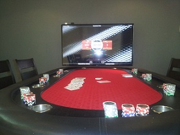
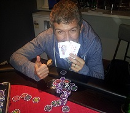

.....Another season..another start at Ben's
| Date | Location | Game | Players |
|---|---|---|---|
| {{tournaments.tournamentOne[0].eventDate}} | {{tournaments.tournamentOne[0].location}} | {{tournaments.tournamentOne[0].tournament}} | {{tournaments.tournamentOne[0].noOfPlayers}} |
| Position | Name | Points | Won |
|---|---|---|---|
| {{result.position}}{{positionSuffix(result.position)}} | {{result.name}} | {{result.points}} | {{result.cash | currency}} |
| Bounty Winner |
|---|
| {{tournaments.tournamentOne[0].bountyWinner}} |
| Position | Name | Played | Won | Win Ratio | Ave Points | Ave Position | Points |
|---|---|---|---|---|---|---|---|
| {{$index + 1}}{{positionSuffix($index + 1)}} | {{result.name}} | {{result.played}} | {{result.won}} | {{result.won / result.played * 100| number:2}} % | {{result.points / result.played | number:2}} | {{result.averagePosition | number:2}} | {{result.points}} |
Brian has emerged triumphant to take out the first poker tournament of the new year.
The topsy-turvy battle at site of the 'original home of Augusta poker' saw the chip lead change several times during the night, with Brian needing to re-buy into the tournament late, then making several gutsy calls to muscle his way back into contention.
It was Brian's first win since the original tournament at the same place way back in April 2013. The night was highlighted by:
|  |
| Ben utilises his tech skills to show the blind levels |
The night kicked off auspiciously with the first showdown emerging minutes after kick-off between Steve and Mark. The raising and re-raising made everyone wonder what the hell was going on. Then both guys flipped their cards. No one had anything. Not a cracker. Steve took the hand out with an Ace High to Jack and taking out a massive chunk of Mark's chips in the process. It was the start of a night where a lot of terrible cards were being dealt.
The first hour also had Brian going up against Mark - and both holding 3s and 5s - unfortunately a split pot after a couple of bold efforts. Steve's initial windfall saw him leading for much of the first hour, but it was Brian who emerged as the chip leader at the break. The second hour opened with Ben going into combat with Brian, and coming off second best. The hand opened with a 4 7 K - and Brian holding JJ and Ben 46. Ben betted heavily at each turn in the hope of bringing forward a fold. With the two remaining cards drawing blanks, Brian, worried about Ben holding Ks called, and made a massive dent into his chip balance as a result.
It was at this stage that the first all-in of the night emerged between Mark and Andy. The first four cards flipped at 9 A J 5 - Mark (AJ) was confident of being ahead while Andy (78) was hoping a 6 would turn at the river. Unfortunatley for Andy, it was a 5 - and Mark was able to recoup some of him earlier losses.
Shortly after, a time out was called with Mark bringing out his famous Sri Lankan chiko rolls. No one had any idea if they were eating fish or beef - but no one was complaining either. Brian offered to go halves with anyone for the last roll - everyone folded. Nice bluff.
|  |
| Brian enjoying happy hunting ground at Bens |
At the second break, Brian continued to hold the lead to Steve but there were several bumps in the road ahead. Andy started to challenge for the chip lead early in the third hour taking out big hand against Brian with 10 trips v 10 K two pair. It was the start of a bunch of losses that would leave him on the brink. The hand of the night however belonged to Steve and Ben. With a AK, Ben raised heavily initally with Steve calling with a A9. The first four cards flipped A595. Ben decided to go all in, and players flipped. Ben, looking down the barrel of a fifth placing couldn't believe his luck, but fortunately for him a 5 was flipped at the river, meaning both players had the full house and split the pot.
The last break saw Ben take out a slender lead from the rest of the pack. Early into the final session, Mark's earlier losses caught up with him bowing out and electing not buy back into the competition. Likewise, Andy followed soon after and again elected not to rebuy.
About this time Brian, after being in the lead for most of the night took a number of hits to his chip balance to point where all chips were lost, but unlike the other two he elected to re-buy. After this, two gutsy all-in moves saw him again move back up to his previous dominant position. With Ben and Steve now starting to wane.
The final hand of the night saw Brian emerge as the winner with a three way all in battle with all players having respectable pre-flop hands. Luckily for Brian (Q9s) held a straight against Steve (A9) holding only 9 pair but needing a heart on the very last card to get to a flush. Ben (A5) had nothing but took out second again for having a higher pre-hand balance. And that was stumps.
Another great night - will Brian's dominance be a sign of things to come in 2014?